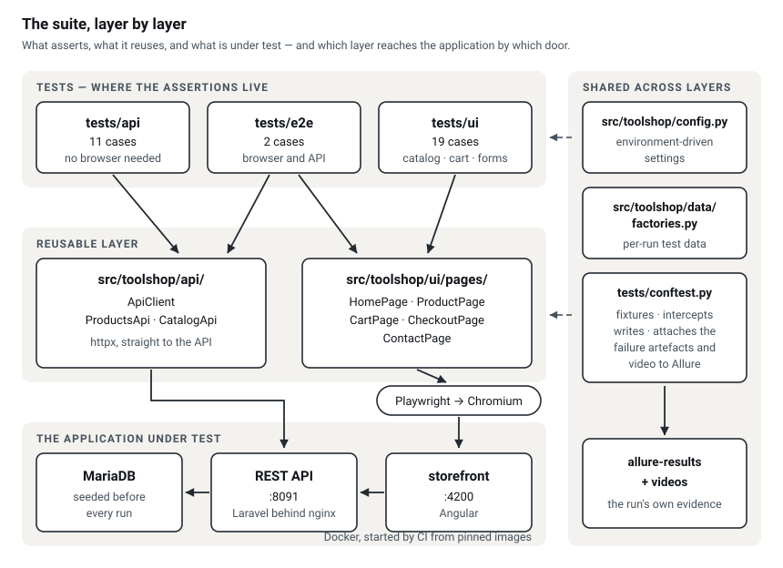
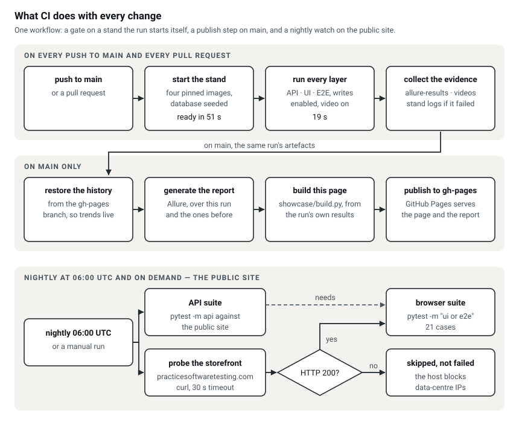

The run this page was built from
- {{TOTAL}}checks ran
- {{PASSED}}passed
- {{FAILED}}failed
- {{SMOKE}}in the smoke set
{{PRODUCT}} of those checks test the application — {{API}} against the REST API, {{UI}} through a browser, {{E2E}} end-to-end through the guest purchase flow. The remaining {{FRAMEWORK}} cover the suite's own plumbing: its configuration, and the build of this page.
A test, as it runs
The guest checkout case, recorded by the browser during the run above: catalog, cart, delivery details, payment method. No narration and no cuts.
The checkout recording is produced by the browser during a published CI run. This copy of the page was generated without one, so there is nothing to play here rather than an empty frame.
How it is put together


The architecture and pipeline diagrams ship with the published build of this page; this copy was generated without them.
How the coverage was chosen
The suite starts from a ranked list of what costs the business money if it breaks, scored by impact and by how likely the feature is to break: eleven risks, each one traceable to the test that covers it. The four rated critical — a wrong total at checkout, add-to-cart failing silently, a guest unable to finish an order, a catalog that renders empty — are the {{SMOKE}} checks in the smoke set. If one of those fails, running the rest is a waste of the pipeline's time.
A check then belongs at the lowest layer that can still prove the thing that matters. Pagination, price bounds, response schema and error codes are data rules, so they are asserted against the REST API, where a failure names its own cause and needs no browser: {{API}} cases. Only behaviour a person can actually see is driven through one, which is the {{UI}} browser cases — rendering, sorting, search, cart arithmetic, form validation. The {{E2E}} end-to-end cases exist because the guest purchase path is the one flow whose whole value is that the separate parts hold together.
What this suite deliberately does not cover
- Accessibility and performance. Both need their own tooling and their own time budget. A green functional suite says nothing about either, and implying otherwise would be the dishonest part.
- Security. There is one check that user input is not reflected back as markup. That is a sanity check, not an assessment.
- Cross-browser rendering. The suite runs on Firefox and WebKit on request, but rendering differences are not asserted anywhere.
- Payment processing. The end-to-end flow stops at choosing a payment method: the demo application has no processor behind it, so going further would assert a fixture, not the product.
Three decisions that keep it maintainable
Locators are the application's own data-test attributes
They are part of the markup contract rather than of its presentation, so rewritten copy or a restyle does not turn into a suite-wide failure that has to be triaged before anyone can tell whether the product broke.
There are no fixed sleeps
Sorting, searching and filtering refetch the product grid. The suite waits
for that response and then for the grid to actually re-render, comparing a
fingerprint of the rendered names. Waiting on the response alone still
races the render — that race is what a sleep(2) hides on a
fast machine and fails on a slow one.
One suite, two environments with different write permissions
The public demo site is shared with everyone else practising against it, so there writes are intercepted in the browser and the payload is asserted instead of being sent — which also catches the bug class where a field is renamed or dropped on its way out. Against the stand the pipeline starts from images pinned by digest, the same tests run with writes enabled and the order-placing case included. One suite, two contracts about what it is allowed to touch.
The full report
Every case, its steps, its duration and the trend across runs. Failures carry a full-page screenshot, the page HTML, the URL and the browser console, and are grouped by cause — product defect, timeout, selector drift, infrastructure — because that is what decides who picks the failure up.